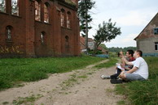
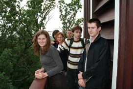
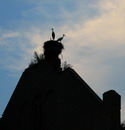
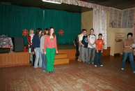

С 12 по 16 августа 2007 года в посёлке Краснолесье на руинах кирхи XIX века работали участники международгного лагеря волонтёров.


Волонтёры, юноши и девушки из Калининградской области, Германии и Польши несколько августовских дней трудились в старой разрушенной Краснолесенской кирхе в рамках проекта "От прошлого к будущему: международный волонтариат для Калининградской области". Этот проект был организован известным в Польше фондом "Боруссия", калининградским центром "Молодёжь за свободу слова", агентством поддержки культурных инициатив "Транзит" при поддержке фонда "Память и будущее" (ФРГ), Фонда Стефана Батория (Польша) и министерства Культуры Калининградской области. В Краснолесье добровольцев из трёх стран принимали сотрудники Виштынецкого экомузея, на которых лежит в настоящее время забота о кирхе. Но помимо работы на архитектурном памятнике в эти пять дней волонтёров ожидали экскурсии в Роминтскую пущу - лес Красный, в музей К. Донелайтиса и встречи с местной молодёжью.
Итогом работы международного лагеря волонтёров стал расчищенный от земли порог кирхи и детальные планы её фасадов.

На колокольне кирхи в Чистых Прудах во время экскурсии в музее К. Донелайтиса.

Сотрудники клуба Краснолесья вместе с сельскими ребятами, организовали для волонтёров праздник в международный День Левши.
Так вход в церковь выглядел год назад, летом 2006 г.
Работа волонтёров в Краснолесенской кирхе.
Дружеский костёр в последний вечер собрал молодёжь посёлка
Сотрудники КРОУ "Виштынецкий эколого-исторический музей" выражают глубокую благодарность организаторам проекта, всем, кто принял участие в организации и работе лагеря волонтёров в Краснолесье и, конечно, самим волонтёрам Анне, Анике, Астрид, Павлу, Блажею и Дмитрию.